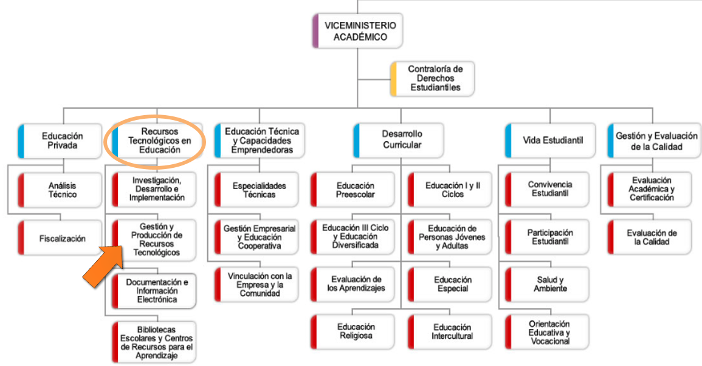

¿Quiénes somos?
La Dirección de Recursos Tecnológicos en Educación es el órgano técnico responsable de analizar, estudiar, formular, planificar, asesorar, investigar, evaluar y divulgar todos los aspectos relacionados con la gestión, experimentación e introducción de las tecnologías de información y comunicación para apoyar el proceso de enseñanza-aprendizaje en aula, favoreciendo la labor del docente, así como el uso y apropiación de los recursos digitales.

Decreto Ejecutivo 36451
En el Ministerio de Educación Pública (MEP), el Departamento de Gestión y Producción de Recursos Tecnológicos (GESPRO-DRTE) es la instancia encargada de gestionar y producir recursos digitales para el aprendizaje, de conformidad con lo establecido en el Decreto Ejecutivo N.° 36451 del 7 de febrero de 2011.
En el marco de dicho decreto, se destaca la importancia del trabajo colaborativo que debe realizarse entre GESPRO-DRTE y las distintas instancias del MEP, con el fin de ofrecer herramientas tecnológicas pertinentes y de calidad a la comunidad educativa.
SECCIÓN III:
De la Dirección de Recurso Tecnológicos en Educación
Artículo 99
Son funciones del Departamento de Gestión y Producción de Recursos Tecnológicos:
- Establecer los lineamientos y procedimientos para orientar la gestión, experimentación y producción de recursos tecnológicos destinados a apoyar de manera permanente los procesos de enseñanza y aprendizaje.
- Establecer mecanismos de coordinación para promover la gestión y el diseño de recursos tecnológicos, equipos y materiales didácticos de apoyo, considerando la realimentación de las instituciones de educación superior y sus institutos de investigación, el Sistema Nacional de Radio y Televisión (SINART), las dependencias especializadas del Ministerio, los centros educativos, las personas directoras, el personal docente, los estudiantes y, en general, los agentes que intervienen en el sistema educativo público costarricense, tanto en el ámbito central como regional.
- Establecer mecanismos de coordinación y alianzas con entidades públicas y privadas, tanto nacionales como internacionales, para promover la gestión de recursos tecnológicos a bajo costo y garantizar el acceso del personal docente.
- Proveer a los centros educativos y al personal docente recursos tecnológicos de apoyo para el mejoramiento del proceso de enseñanza y aprendizaje.
- Apoyar al Departamento de Investigación, Desarrollo e Implementación en la promoción de proyectos innovadores.
Otras funciones inherentes a su ámbito de competencia y atribuciones, asignadas por la jefatura superior.
CAPÍTULO VI:
Del Viceministerio Académico
SECCIÓN I:
De la Dirección de Desarrollo Curricular
Artículo 63
- Inciso e) Promover la elaboración de recursos didácticos y guías metodológicas para el desarrollo curricular en todas las disciplinas, modalidades, ciclos y niveles del sistema educativo, incorporando las tecnologías de la información y la comunicación (TIC).
- Inciso g) Coordinar con la Dirección de Recursos Tecnológicos en Educación los lineamientos de índole curricular que deben considerarse en la producción, introducción y experimentación de las tecnologías de la información y la comunicación, con el fin de apoyar la labor docente en el aula.
SECCIÓN III
De la Dirección de Recurso Tecnológicos en Educación
Artículo 83
- Inciso d) Definir, conjuntamente con la Dirección de Desarrollo Curricular, los lineamientos de índole curricular que deben considerarse para la gestión, experimentación e introducción de las tecnologías de la información y la comunicación, en apoyo a la labor docente en el aula.
- Inciso f) Impulsar la adopción, adaptación, creación, divulgación y utilización de recursos tecnológicos para la educación en los distintos niveles del sistema educativo costarricense.